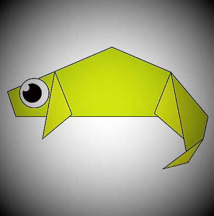
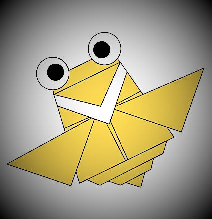
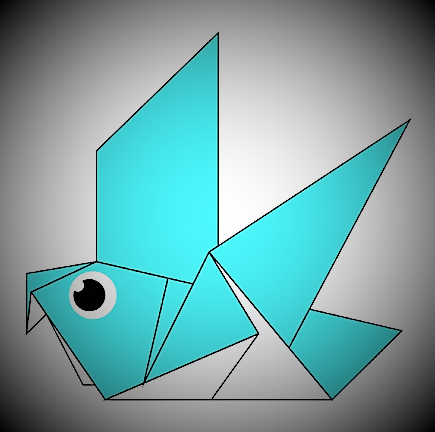
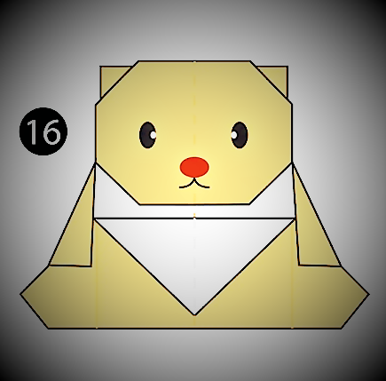
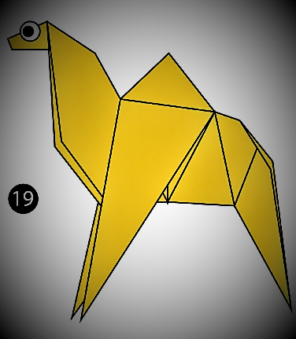

Origami Designs
About us
Follow us
1. Origami Chameleon

Click here to see the step-by-step tutorial
here
Some interesting facts about chameleon's:
- Chameleons Don't Change Color to Match Their Environment
- Unlike many lizards, Chameleons can't regrow their tails
- Chameleons feet works like salad tongs
2. Origami Panda
Click here to see the step-by-step tutorial here
Some interesting facts about panda's:
- A giant panda is much bigger than your teddy bear
- Pandas have so many fans because they look cute
- Pandas are "lazy" — eating and sleeping make their day
3. Origami Flying Cicada

Click here to see the step-by-step tutorial here
Some interesting facts about cicada's:
- Cicadas can survive a huge fall as babies, or nymphs
- The loud whirring or buzzing sound you hear is an all-male cicada chorus
- They’re true bugs (from the order Hemiptera). So you can call them a bug and be scientifically accurate
4. Origami Pigeon

Click here to see the step-by-step tutorial here
Some interesting facts about pigeon's:
- Pigeons are incredibly complex and intelligent animals
- Pigeons mate for life, and tend to raise two chicks at the same time
- Both female and male pigeons share responsibility of caring for and raising young
5. Origami Teddy-Bear

Click here to see the step-by-step tutorial here
Some interesting facts about teddy bear's:
- The teddy was named after President Theodore Roosevelt, after he refused to shoot a bear during a 1902 hunting trip
- The Teddy Bears’ Picnic song was originally called The Teddy Bear Two Step. .
- A teddy bear is a stuffed toy in the form of a bear.
6. Origami Camel

Click here to see the step-by-step tutorial here
Some interesting facts about camel's:
- Camels have three sets of eyelids and two rows of eyelashes to keep sand out of their eyes
- Camels are very strong and can carry up to 900 pounds for 25 miles a day
- Don’t make a camel angry – they can spit as a way to distract whatever they think is a threat